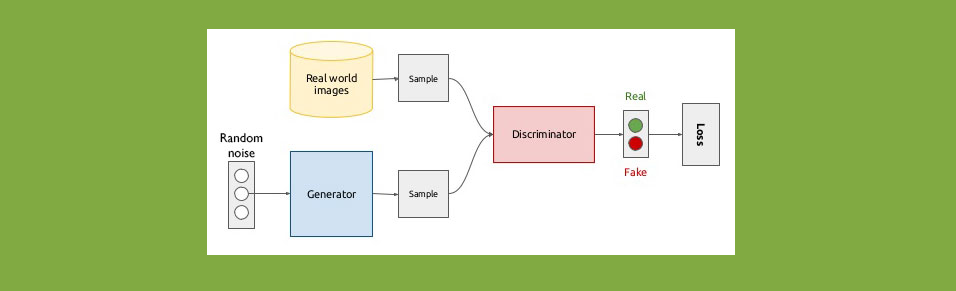
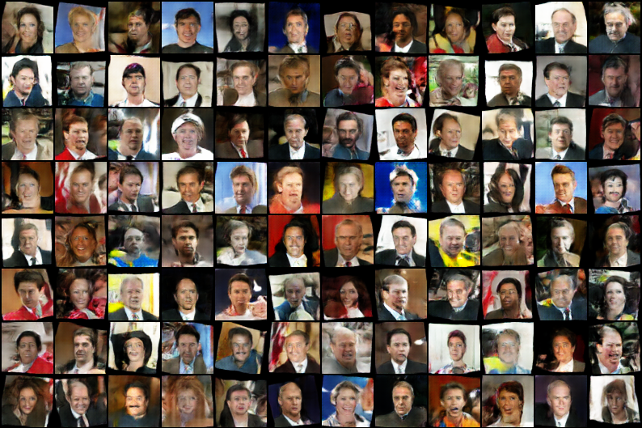

GANs are one of the most interesting innovations in deep learning till date. Two networks competing to make each other better. But there is still a long way to go for GANs.
This is DCGAN. One of the countless Generative Adverserial networks. This paper was published by one of the major contributors of PyTorch.

The discriminator is feeded images from two sources: randomly sampled from real images, and the images generated from the generator. The generator learns to fake images that look similar to the real dataset and the discriminator learns to label which images are real. The optimum would be reached when the discriminator labels all images as real.
Then we take the generator and generate new images from it.
In this project I trained the network on a dataset of faces(LFW deepfunneled). Here are some samples that a the trained generator generated:

Feel free to check it out github